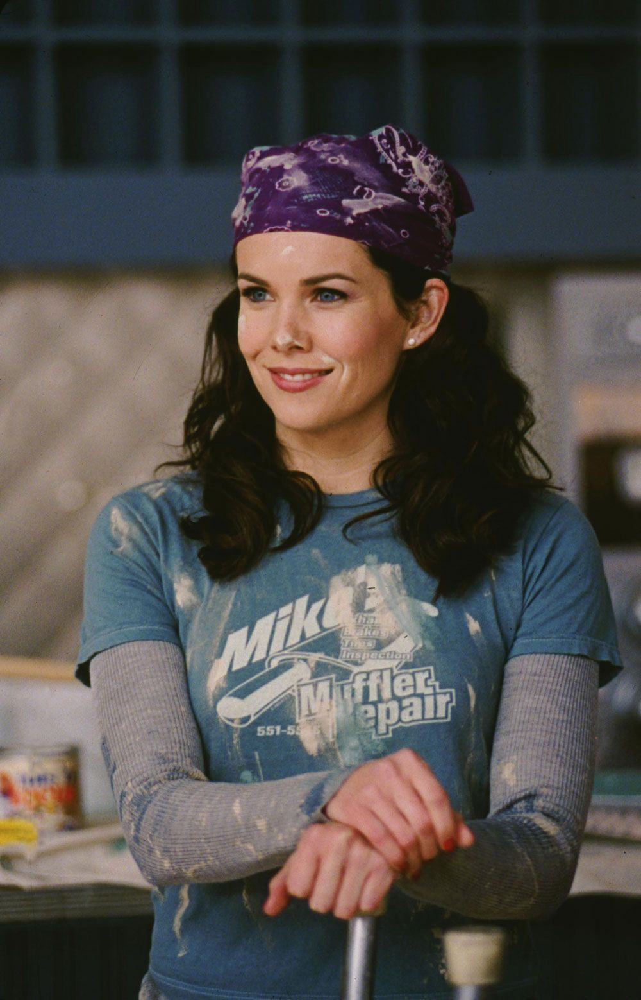
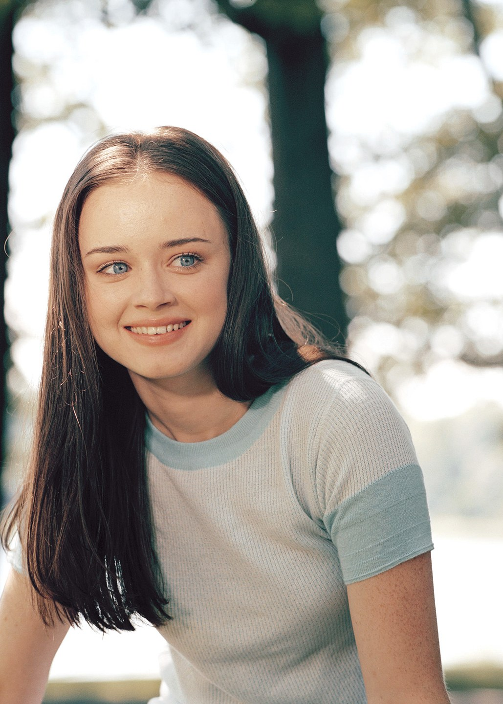
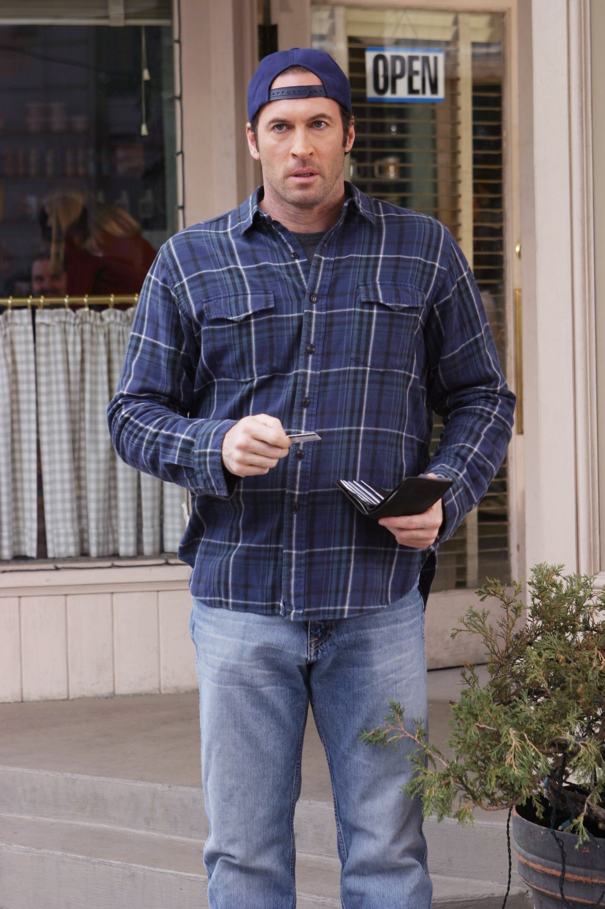
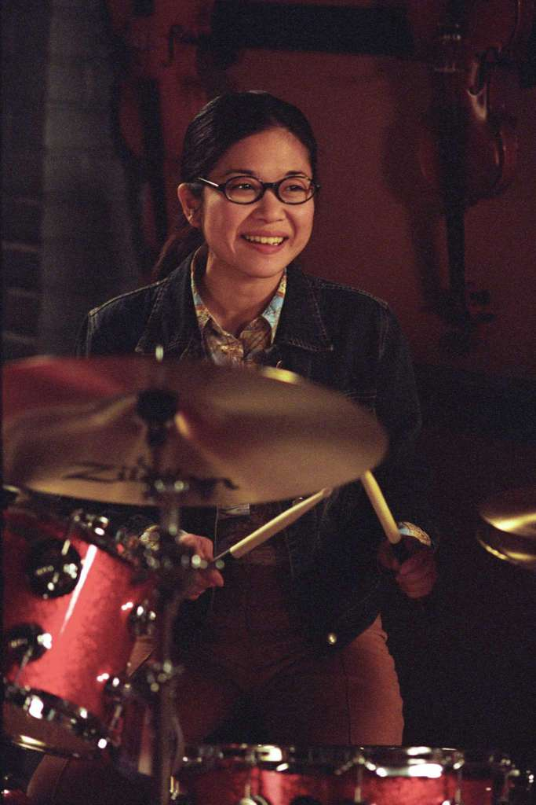

This page is all about the Gilmore Girls. Use this website if you have watched Gilmore Girls or are planning to. I will be sharing my knowledge of each character and my personal opinions.
About the author:
My name is Zeena Omer and I'm a pretty big fan of Gilmore Girls, if you couldn't tell. It's a really awesome show and it makes me super happy lol

Lorelai Gilmore
Super amazing mom. Got pregnant at 16 and left home in Hartford, Conneticut for Stars Hollow. Played by Lauren Graham and, in my personal opinion, the best character on the show (although she had questionable taste in men until the end of the show).
Rory Gilmore
Lorelai's daughter. Super into reading. Went to an Ivy League college (not gonna spoil it lol). Overall very kind but has pretty bad judgment. Played by Alexis Bledel.
Luke Danes
Owns "Luke's Diner". Had a huge crush on Lorelai, which totally drained me cause he always missed the best opportunities to tell her. Also one of my favorite characters because of how much he loved Rory and Lorelai. Played by Scott Patterson.
Lane Kim
Rory's best friend since infancy. Super strict and religious Korean mom. Plays the drums. Played by Keiko Agena.